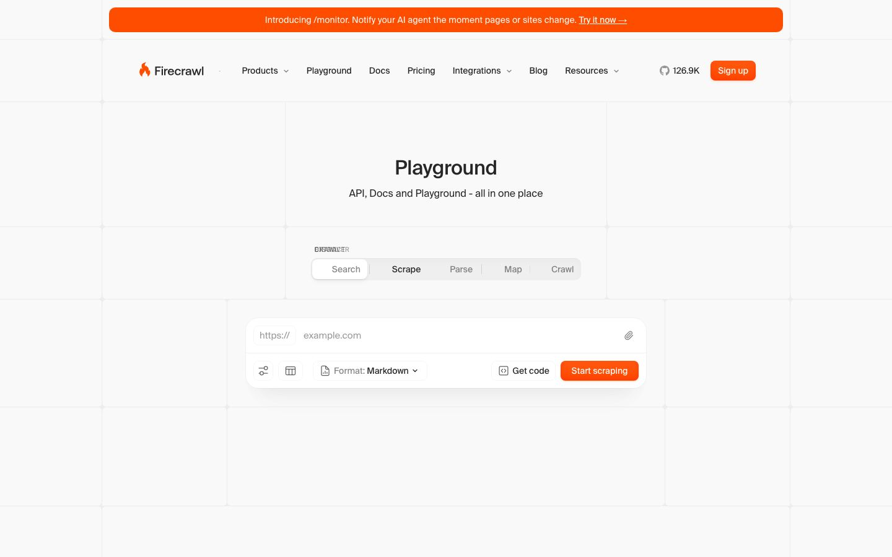

Agent Development
How web acquisition becomes AI-ready data, where databases fit, and when MongoDB is a strong architectural choice.
55 minutes / 36 slides
Why this matters
Navigation, ads, cookie banners, scripts, redirects, PDFs, tables, and hidden state all pollute naive scraping.
Docs, prices, policies, competitors, and changelogs drift after the first successful ingest.
Useful answers require source lineage, freshness, retrieval quality, and repeatable ingestion behavior.
Firecrawl handles acquisition. Your data architecture decides what becomes durable, searchable, and trustworthy.
Learning goals
Choose between scraping, mapping, crawling, searching, browser interaction, and structured extraction.
Design a web-to-RAG pipeline with job state, raw capture, normalized documents, chunks, embeddings, and retrieval.
Separate source inventory, job ledger, archive, document store, vector index, evals, and audit logs.
Decide when Firecrawl is worth adopting and when MongoDB is the right place to keep the acquired data.
Product surface

The public playground makes the mental model visible:
Search, Scrape, Parse,
Map, and Crawl are different ways to
turn web locations into usable data.
Screenshot captured from the public Firecrawl Playground on 2026-05-31.
Endpoint map
scrapeOne known URL. Return markdown, JSON, HTML, links, screenshot, or metadata.batch scrapeMany known URLs. Same extraction shape, async delivery, webhooks, and concurrency controls.mapDiscover URLs first. Use sitemap, filters, subdomains, and query handling before fetching content.crawlWalk a site from a base URL with include/exclude paths, depth, limits, webhooks, and nested scrape options.searchStart with a query. Optionally scrape search results and use domain, time, and category filters.interactResume a browser session after scrape and click, type, scroll, or run Playwright-style code.Output contract
Your database decides what is canonical, current, queryable, and auditable.
Scrape
scrape is the single-page primitiveFor one known page, start here before reaching for crawling or autonomous research.
Scrape code
import { Firecrawl } from "firecrawl";
const firecrawl = new Firecrawl({ apiKey: process.env.FIRECRAWL_API_KEY });
const page = await firecrawl.scrape("https://docs.example.com/pricing", {
formats: ["markdown"],
onlyMainContent: true,
maxAge: 60 * 60 * 1000,
timeout: 120000,
});
await documents.updateOne(
{ sourceUrl: page.metadata?.sourceURL },
{
$set: {
markdown: page.markdown,
finalUrl: page.metadata?.url,
title: page.metadata?.title,
acquiredAt: new Date(),
},
},
{ upsert: true },
);The important design move is making freshness, content shape, and provenance explicit.
Discovery
Discovery is an architectural control point for quality and cost.
Crawl lifecycle
Search
| Starting point | Firecrawl shape | Storage implication |
|---|---|---|
| Known URL | scrape or batch scrape |
Store source policy and refresh cadence. |
| Known domain | map then crawl |
Store URL inventory and inclusion rules. |
| Unknown source | search or agent |
Store discovered URLs before relying on the answer. |
Dynamic pages
interact is for pages that need browser state/scrape and keep the returned scrapeId.Browser sessions are powerful, but they are slower and more operationally sensitive than static acquisition.
Structured extraction
| Need | Likely choice | Why | Watch out |
|---|---|---|---|
| One known page | scrape JSON mode |
Controlled, synchronous, predictable. | Still validate extracted fields. |
| Many known pages | batch scrape or constrained agent |
Good for lists of product pages, docs, or known companies. | Needs job ledger and dedupe. |
| Unknown sources | agent or search |
Discovery is part of the task. | Costs and repeatability need guardrails. |
Running example
What changed in a competitor's API, pricing, and integration docs this week, and how should our product team react?
Architecture
Database roles
Job ledger
Webhooks and polling should converge on the same idempotent records.
Raw archive
Store content hash, acquired time, Firecrawl options, source URL, final URL, and parser settings.
When extraction rules improve, reprocess old evidence without pretending it was newly acquired.
When an answer is challenged, trace it back to the exact page version and retrieval context.
Normalized documents
{
"_id": "doc_competitor_pricing_2026_05_31",
"source": {
"sourceUrl": "https://example.com/pricing",
"finalUrl": "https://www.example.com/pricing",
"crawlId": "fc_crawl_123",
"contentHash": "sha256:..."
},
"content": {
"title": "Pricing",
"markdown": "# Pricing...",
"summary": "Public pricing tiers and add-on limits."
},
"freshness": {
"acquiredAt": "2026-05-31T14:05:00Z",
"status": "changed"
},
"policy": {
"allowedForRag": true,
"retentionClass": "public-web"
}
}Retrieval prep
A chunk without provenance is just text with amnesia.
MongoDB fit
| Role | MongoDB fit | Why |
|---|---|---|
| Normalized documents | Strong | Scraped pages, metadata, extracted fields, lineage, and policy data are naturally document-shaped. |
| Chunks with vectors | Strong | Vector fields, metadata filters, and application fields can live in one collection model. |
| Job ledger | Strong | Flexible records work well for endpoint-specific options, page events, retries, and per-source state. |
| Raw binary archive | Possible | Often better in object storage, with MongoDB storing pointers and metadata. |
| Graph reasoning | Depends | Entity graphs may justify a graph database when relationship traversal is the core workload. |
Document shape
{
"_id": "chunk_doc123_0007",
"docId": "doc_competitor_pricing_2026_05_31",
"sourceUrl": "https://www.example.com/pricing",
"headingPath": ["Pricing", "Enterprise"],
"text": "Enterprise customers can request custom limits...",
"embedding": [0.012, -0.034, 0.091],
"metadata": {
"company": "ExampleCo",
"pageType": "pricing",
"acquiredAt": "2026-05-31T14:05:00Z",
"contentHash": "sha256:..."
}
}The useful MongoDB pattern is not only vector storage. It is vector storage plus product metadata and lineage.
MongoDB retrieval
Freshness
Freshness is a data lifecycle, not a cron job pasted onto ingestion.
Quality loop
Governance
Allowed paths, blocked paths, owners, robots posture, legal notes, and retention class.
Headers, cookies, authenticated sessions, and browser profiles should be scoped and auditable.
Decide what raw content, extracted data, screenshots, and traces are retained or discarded.
Reliability
Retry-After and reduce concurrency pressure.Cost model
Strategy
| Decision | Good signal | Risk to validate |
|---|---|---|
| Use Firecrawl | Rendering, crawling, parsing, and web drift are infrastructure problems. | Limits, cost, feature coverage, and vendor dependency. |
| Build custom | Sources require domain-specific browser logic or strict control. | Maintenance burden and hidden crawler complexity. |
| Blend | Most sources are standard, but a few need custom extractors. | Inconsistent provenance and evaluation across paths. |
Database alternatives
| Need | Likely store | MongoDB position |
|---|---|---|
| Application documents and metadata | Document database | Strong primary store. |
| Vector and hybrid retrieval | MongoDB Vector Search or vector-first store | Strong when filters and documents matter. |
| Large immutable binaries | Object storage | Store pointers and metadata. |
| Event streaming | Queue or log | Useful for state, not a replacement for stream transport. |
| BI reporting | Warehouse or lakehouse | Export summarized facts when analytics dominate. |
Adoption path
Anti-patterns
Blueprint
sources: domain, owner, allowed paths, freshness SLA.crawl_jobs: endpoint, options, status, credits, retries.web_docs: normalized markdown, metadata, hash, policy.web_chunks: text, vector, parent id, filters, model version.Decision checklist
| Question | Evidence you want |
|---|---|
| Can Firecrawl acquire the source reliably? | Success rate, page errors, queue time, retry profile. |
| Is the content useful after cleaning? | Human review, duplicate rate, boilerplate rate, extraction accuracy. |
| Does MongoDB match the query shape? | Metadata filters, vector recall, full-text needs, hybrid ranking evidence. |
| Is freshness affordable? | Changed-page rate, cost per refresh, selective re-embedding plan. |
| Can the system explain itself? | Source lineage, citations, job ledger, audit trace, eval history. |
Recap
It discovers, scrapes, crawls, searches, interacts, monitors, and converts web surfaces into usable artifacts.
They make ingestion durable, observable, governable, queryable, replayable, and evaluable.
It is compelling when document-shaped content, metadata, vectors, filters, hybrid search, and app state belong together.
The goal is not to scrape a page into a prompt. The goal is a controlled data supply chain for AI features.
References